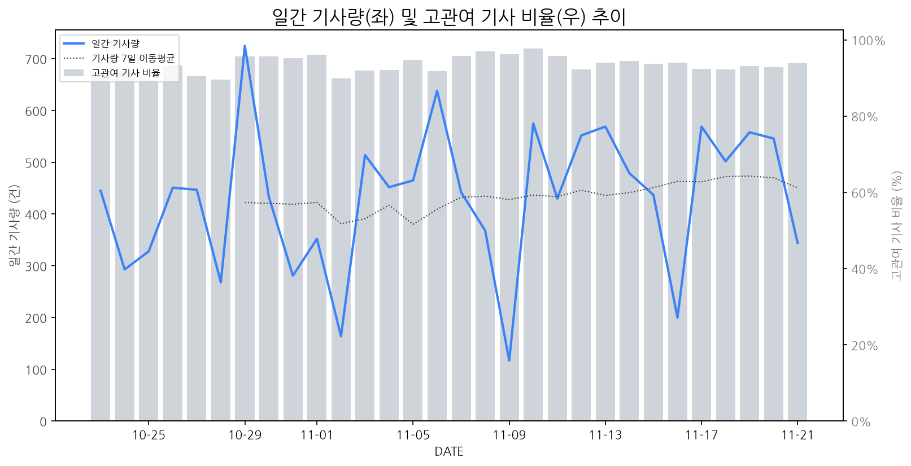

1
시장 활동 지표
기사량 추세 & 이상 징후 탐지
시장의 '전체 기사량'이 평소보다 비정상적으로 급증했는지(Spike)를 차트로 확인하고, LLM이 분석한 급등의 핵심 원인을 파악할 수 있음

고관여 기사란? 산업 연관 키워드로 수집된 기사들 중 디스플레이 키워드에 가중치를 반영하여 도출된 관련성 높은 기사
수집된 기사 수 (2026-11-21)
344
-28% WoW
기사량 변동 수준 (7일 이동평균 대비)
±6.7% 이하
2
오늘의 키워드
급격한 관심 ↑, 주목해야 할 키워드
1
스마트워치
+1.6σ
블랙프라이데이 등 연말 쇼핑 시즌과 신제품 출시 소식이 스마트워치 관심 급증을 견인했습니다.
Related Metrics
금일 언급량: 3, 전일 대비: +3
Interpretation
스마트워치 수요 증가 시사
Next Step
'스마트워치' 관련 상세 기사 및 경쟁사 반응 모니터링
3
실시간 Risk 키워드
경계해야 할 시그널 탐지
특정 토픽의 부정 감성 점수가 급등할 때 이를 즉시 탐지하고, "근거 기사" 링크를 통해 리스크의 실체를 빠르게 파악할 수 있음
!
**현대차 하이브리드 차량 모델**
하락폭: 0.03
- 주요 신차 발표 경쟁 심화 및 융합 기술 주목: 현대차의 하이브리드 차량 모델 관련 긍정적 감성 점수 하락은, 경쟁사들의 신차 발표(특히 전기차 및 하이브리드 라인업 강화)와 더불어 현대차가 게임쇼 등 다양한 행사에 참여하며 신기술 및 융합 콘텐츠(AI 모델, 게임과의 연계)를 선보이는 것에 대한 시장의 관심이 분산되었기 때문일 수 있습니다. 이는 디스플레이 제조 기업에게는 신규 차량 모델 적용 기회 확보 경쟁이 치열해지고, 차량용 디스플레이 기술 트렌드 변화에 대한 발 빠른 대응이 더욱 중요해짐을 시사합니다.
- 친환경 및 차세대 모빌리티 기술에 대한 관심 집중: 인도네시아의 3열 전기 SUV '네이라' 공개와 같이 친환경 및 차세대 모빌리티 기술에 대한 긍정적 뉴스가 부각되는 상황에서, 상대적으로 하이브리드 차량 모델에 대한 투자 및 관심이 일시적으로 분산되었을 가능성이 있습니다. 디스플레이 제조 기업 입장에서는 이러한 시장 트렌드 변화를 면밀히 파악하여, 전기차 및 자율주행 관련 고성능 디스플레이 솔루션 개발에 집중하고, 동시에 하이브리드 차량에도 적용 가능한 차별화된 디스플레이 기술(예: 연비 효율성 강조, 사용자 경험 극대화)을 선보여야 할 필요성이 제기됩니다.
Current Status
오늘 점수: 0.48, 7일 평균: 0.51
Key Evidence Article (Most Negative)
4
주요 이벤트 모니터링
실시간 산업 동향 파악을 위한 주요 활동
최근 발생한 주요 기업들의 신제품 출시, 투자 등 주요 이벤트를 제공하여 매일 경쟁사 동향을 확인할 수 있음
삼성디스플레이가 폴더블 및 게이밍 디스플레이 시장 강화를 위해 아산 클러스터를 거점으로 사업을 확대할 계획이다. 이는 고부가가치 디스플레이 기술 경쟁력을 높이기 위한 전략적 투자로 해석된다.
Impact
이번 투자는 폴더블 및 게이밍 디스플레이 시장에서의 삼성디스플레이의 시장 지배력을 더욱 공고히 하고, 관련 기술 생태계 발전을 가속화할 것으로 예상된다.
Next Step
경쟁사는 차별화된 기술 개발 및 신규 응용 분야 발굴을 통해 시장 경쟁력을 확보해야 한다.
LS일렉트릭은 미국에서 1,300억원 규모의 대규모 사업을 수주하며 시장에서의 입지를 강화했다. 더불어 베트남 시장에서는 매출이 두 배 성장하며 사업 확장에 성공적인 성과를 보였다.
Impact
LS일렉트릭의 이번 성과는 전력 설비 및 자동화 솔루션 분야의 경쟁력을 보여주며, 관련 시장의 플레이어들에게는 기술 개발 및 해외 시장 공략의 중요성을 재차 강조하는 계기가 될 수 있다.
Next Step
디스플레이 제조 기업은 LS일렉트릭의 사업 확장 동향을 면밀히 주시하며, 전력 인프라 및 자동화 관련 협력 가능성을 탐색하거나 자사 공급망 내에서의 경쟁력을 강화하는 방안을 모색해야 한다.
블랙프라이데이를 맞아 소비자들의 구매를 유도할 프리미엄 스마트워치 6종이 주목받고 있습니다. 이는 소비 심리 회복과 연말 쇼핑 시즌을 겨냥한 마케팅 전략의 일환으로 분석됩니다.
Impact
프리미엄 스마트워치 시장에서의 경쟁 심화는 고품질 디스플레이 및 관련 부품 수요 증가로 이어질 수 있습니다.
Next Step
디스플레이 제조 기업은 블랙프라이데이 시즌을 겨냥한 스마트워치 제조사들의 디스플레이 수요 증가에 대비하여 생산 및 공급 계획을 점검해야 합니다.
중국 TCL이 성수동 팝업스토어 규모를 3배로 늘리며 신규 기술인 'SQD 미니 LED'를 전면에 내세웠다. 이는 TCL이 프리미엄 디스플레이 시장 공략을 위한 공격적인 마케팅 및 기술 홍보 강화 의지를 보여준다.
Impact
TCL의 SQD 미니 LED 기술 집중은 미니 LED 디스플레이 시장의 기술 경쟁 심화를 가속화하고, 관련 부품 공급망 및 가격 정책에 영향을 미칠 수 있다.
Next Step
경쟁사들은 TCL의 SQD 미니 LED 기술 성능을 면밀히 분석하고, 자사 제품과의 차별화 전략 및 기술 개발 방향을 재점검해야 한다.